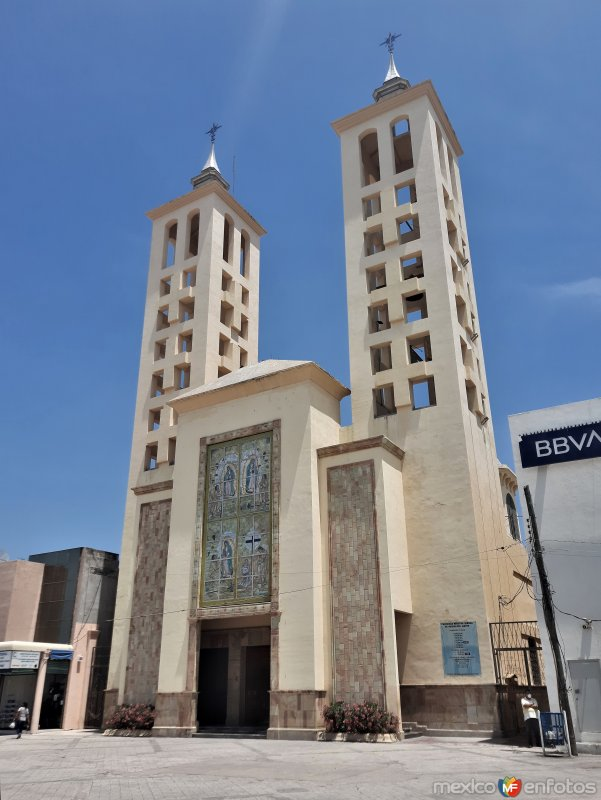
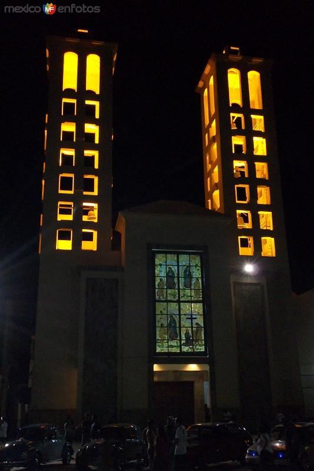

Comunidad • Fe • Servicio
Un lugar de encuentro con Dios en el corazón de Ciudad Mante.
Información, ubicación y contacto directo. Con un diseño moderno, accesible y rápido (PWA + animaciones suaves).
Dirección
Miguel Hidalgo 104, Zona Centro
Ciudad
Cd. Mante, Tamps.
Contacto
WhatsApp: 831 898 9580
Acerca de la Iglesia
La Parroquia Nuestra Señora de Guadalupe es un punto de referencia en la zona centro de Ciudad Mante. Aquí encontrarás un espacio de oración, sacramentos, acompañamiento y actividades comunitarias.
- ✓ Celebraciones y vida parroquial
- ✓ Eventos en fechas especiales (p. ej. 12 de diciembre)
- ✓ Atención y orientación pastoral
Nota: Los horarios pueden cambiar por temporada. Para confirmar, escríbenos por WhatsApp.

Fachada principal
Ciudad Mante • Tamaulipas

Vista nocturna
Iluminación de las torres
Galería
Algunas postales de la iglesia y su entorno. (Toca para ver en grande)
Ubicación
Encuéntranos en la zona centro:
Dirección
Miguel Hidalgo 104, Zona Centro, 89800 Cd. Mante, Tamps.
Referencia
Zona centro
Contacto por WhatsApp
Escríbenos y te respondemos lo antes posible (horarios, actividades, información general).
Desarrollado por iadOS.mx
Soluciones de Inteligencia Artificial & DevOps para comunidades y negocios.
iadOS.mx
Inteligencia Artificial • DevOps Solutions
PWA (instalable)
Carga rápida
Animaciones on-scroll
Accesible
Soporte técnico (WhatsApp)